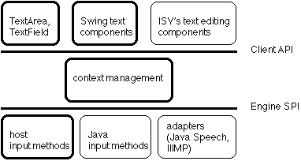

The following picture shows the overall structure of the framework and its clients. Parts outlined in bold are integrated with the input method framework as part of the Java SE platform; others can be developed and distributed separately by independent software vendors.
The input method client API defines the classes and interfaces that text editing components can use to implement an integrated text input user interface. The AWT text components TextArea and TextField provide on-the-spot or over-the-spot composition, depending on implementation. The text components of the Swing user interface toolkit provide an integrated text input user interface. The context management manages communication paths between the text editing components and input methods. The input method engine SPI defines the interfaces that allow input method engines and adapters to be plugged into the framework. Input method engines can be implemented directly in the Java programming language using these interfaces. To use native input methods integrated with the host input method manager, an adapter translates information between the data models used by native input methods and the input method framework and provides the composition window. Adapters for other input systems, such as Java Speech or the Internet-Intranet Input Method Protocol (IIIMP), can also be implemented using this interface.
Every instance of the Component class is potentially a client of the input method framework. The framework distinguishes between four kinds of components:
All four kinds of components may coexist in the same window. The input method framework, therefore, needs to determine the capabilities of components and adjust its behavior as the focus moves from one component to another.
Client components are not responsible for drawing candidate lists or for user interface elements that control the input method's behavior. Depending on the platform, this responsibility rests with input methods, the host input method manager, or the input method framework.
Input methods are not concerned with the differences between client components. They interact with them indirectly through the input method framework, which presents an interface similar to an active client and handles the differences internally.
The input method framework supports three input styles:
The framework chooses between on-the-spot and below-the-spot input for active clients based on a system property or an AWT property "java.awt.im.style". The system property can be defined from the command line (by the end user), the AWT property in a localized awt.properties file (by the localizer or a system administrator). If both are defined, the system property takes precedence. If the property's value is "below-the-spot", below-the-spot input is used, otherwise on-the-spot input.
Support for below-the-spot input with native input methods is platform dependent. It is supported on Windows, but not on Solaris. Where it is not supported, on-the-spot input is used instead.
The input style used for peered text components (instances of the TextComponent class) is implementation dependent and may not be any of the styles described above. On Windows, below-the-spot input may be selected as described above, otherwise over-the-spot input is used, where composed text is drawn in a separate window covering the insertion point. On Solaris, the input style depends on the input method.
No input style is associated with non-clients.
Input methods are not concerned with the differences between input styles. They interact with client components indirectly through the input method framework, which presents an interface assuming on-the-spot input and handles the differences internally.
The input method engine SPI enables the development of input methods in the Java programming language. Adapters for other input systems, such as Java Speech or the Internet-Intranet Input Method Protocol, can also be implemented using this interface. For information specific to the SPI, see the SPI package specification.
The SPI is also used for host input method adapters, which connect to native input methods integrated with the host input method managers, such as the Input Method Manager on Microsoft Windows, the Text Services Manager on MacOS, and XIM on Solaris. The host input method adapter plays the role of an input method within the input method framework, and translates events and requests between the data models used by AWT and the input method framework on one side and the host's input method manager on the other side. It also cooperates with the input context in managing the composition window - for passive clients interacting host input methods, typically the root window provided by the host input method manager is used. The adapter passes on requests for particular input methods to the host, but users can also use the host's selection mechanism to select input methods.
InputContext instances manage communication contexts between client components and input methods. The main task of an input context is to maintain the connection from the current client component to its current input method. It dispatches input events such as key and mouse events from the component to the current input method, and input method events from the input method to the client component. It also dispatches requests for information from the input method to the client component.
Each InputContext instance provides its own text input environment, separate from all other input contexts. This allows applications to support multiple concurrent input operations. For example, in the middle of entering text into a document, a user can open a file dialog and enter a file name, without affecting the composition state of the text being entered into the document.
By default, one InputContext instance is created per Window instance, and this input context is shared by all components within the window's containment hierarchy. If necessary, components can create private input contexts. A component that doesn't have its own input context uses the one used by its parent. An input context has at most one current client component, the component that currently has the focus. When switching to a new client component, the input context calls its endComposition method to commit or cancel composed text for the previous client component.
The input context creates an input method instance for each input method engine that its client components need to use. Separate input method instances are created for each input context instance. The instances are kept until the input context is disposed, so that the instances can keep information about the text that was entered in the window.
The input context also handles input method selection and the composition window.
An input context has a current input method and a current locale.
The input method framework provides two separate ways of selecting input methods and input locales:
The framework does not give preference to selections made either way, so the last successful selection made either way for an input context determines the current input method for an input context (note that selectInputMethod may fail if no available input method supports the requested locale).
Before switching to a new input method, the input context calls the old input method's endComposition method. The input context retains the old input method instance and reuses it when the same input method is selected again for this input context at a later point.
InputContext.selectInputMethod looks for an input method supporting the specified locale using the results of the InputMethodDescriptor.getAvailableLocales methods of all installed input methods. If the user has previously selected an input method with the specified locale from the user interface, this input method is chosen. Otherwise it is implementation dependent which input method is chosen if multiple input methods support the specified locale.
The user interface for selecting input methods is implementation dependent. It must provide the user with a list of all available input methods and let him/her select one of them. Where an input method supports multiple locales, the user interface also lets the user select the input locale (this facility may be omitted for host adapters if the host provides an alternative facility to select the input locale). Licensees developing Java runtime environments for their own platforms are encouraged to integrate the user interface with existing user interfaces for selecting keyboards or input methods.
On Windows and Solaris (with Motif-based AWT), the user interface consists of three parts: a "Select Input Method" menu item added to the Window menu in Motif or the System menu in Windows, a user-defined input method selection key, and a pop-up menu brought up by either the "Select Input Method" menu item or the input method selection key. The "Select Input Method" item is only shown if the Java runtime environment has more than one input method available or the input method supports multiple locales (the host input method adapter is treated as a single input method). The popup menu lists the available input methods, with supported locales of multi-locale input methods as submenus, and lets the user select from this list. The JREs for Solaris (with X-based AWT) and Linux do not provide the "Select Input Method" menu item, i.e., the pop up menu is only brought up by pressing the input method selection key. The input method selection key definition is stored persistently using two preferences, one defining the base key code value and the other defining the modifiers. The "modifiers" preference is optional. If a modifiers entry is defined without matching keyCode entry, that modifiers entry is ignored. The following table shows the contents.
|
key name (String) |
value (int) |
|---|---|
| "keyCode" | any java.awt.event.KeyEvent.VK_* value except VK_UNDEFINED |
| "modifiers" |
any combination of java.awt.event.InputEvent.*_MASK |
The JRE looks for these preferences first in the user's preference tree node /java/awt/im/selectionKey, then, if no definition could be found, in the system preference node with the same path.
For passive clients and for active clients using below-the-spot input, the input method framework provides a composition window. The window is opened when the input method starts sending composed text; it is closed when all text is committed. At most one composition window is open at any time even if multiple compositions (using separate input contexts) are currently in progress.
For below-the-spot input, the window is automatically positioned just below the insertion point where text will be inserted after being committed. The window's location is calculated first when the window is opened, then updated whenever committed text has been dispatched to the client component. If positioning the window below the insertion point would move it partially or entirely off-screen, it is moved above the insertion point.
The framework provides two mechanisms to communicate information between the current client component and the current input method:
Both event dispatching and calling InputMethodRequests methods are done indirectly through the input context. This lets the input context redirect information to a composition window if necessary. The composition window provides a full implementation of an active client, and so the input method can always assume it is interacting with an active client.
The following sections show the flow of events through the input method framework and explain the associated handling of input method requests. Four alternatives are described, depending on the kind of client component and the selected input style. All diagrams assume an input method implemented in the Java programming language using the input method engine SPI. Event flows for peered text components or native input methods are implementation dependent, may vary substantially, and are not shown.
Input events such as KeyEvent and MouseEvent are sent to the current input method through the InputContext object. If the input method uses the event for text composition, it marks the event consumed and generates an input method event to the component. The client component must have registered an InputMethodListener so it can handle InputMethodEvents coming from the input method and receive composed and committed text.
InputMethodRequests calls from the input method are forwarded to the object returned by the client component's getInputMethodRequests method.
Input events such as KeyEvent and MouseEvent are sent to the current input method through the InputContext object. If the input method uses the event for text composition, it marks the event consumed and generates an input method event. Since below-the-spot input is selected, the event is redirected to the composition window, which handles it. When text is committed (partially or entirely), the composition window generates a new input method event holding the committed text for the client component. The client component must have registered an InputMethodListener so it can handle InputMethodEvents, which in this case come from the composition window and only contain committed text.
InputMethodRequests calls from the input method that relate to the display of composed text (getTextLocation, getLocationOffset) are handled by the composition window; all others are forwarded to the object returned by the client component's getInputMethodRequests method. The composition window uses the client component's getTextLocation implementation to position itself.
Input events such as KeyEvent and MouseEvent are sent to the current input method through the InputContext object. If the input method uses the event for text composition, it marks the event consumed and generates an input method event. The event is redirected to the composition window, which handles it. When text is committed, the composition window translates it into key events for the actual client's key event listener. Only KEY_TYPED events are sent.
InputMethodRequests calls from the input method are handled by the composition window. Calls hat relate to the display of composed text (getTextLocation, getLocationOffset) are handled based on information about the composed text being displayed. All other calls are handled at all times based on the assumption that composition has just started and there's no committed text, because the composition window does not have access to text in the client component.
Events for non-clients do not go to the input context. All events go straight to the component's listeners (here, the key listener).